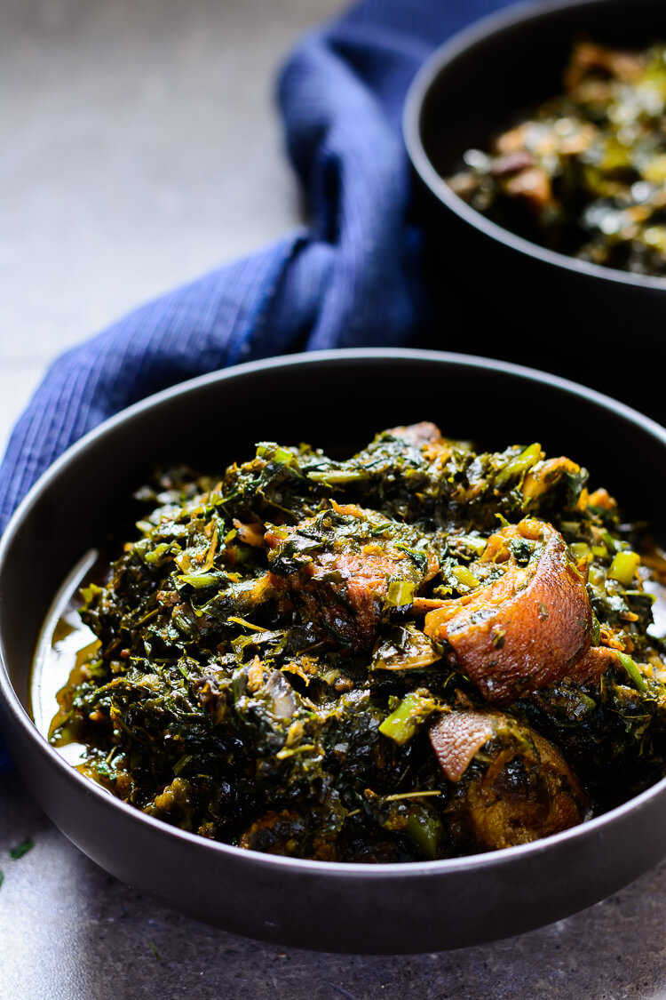

vegetable-soup

Home
vegetable-soup
this soup is a very popular and dearly loved national soup in Nigeria, well packed with varieties of nutrients for proper body funtion. This soup is very easy to prepare
Ingredients
- 70g water leaf
- 70g
- 2 kg goat meat
- 1 tablespoon chicken bollion
- 1 cup red oil
- 1/2 cup onions
- teaspoon salt and pepper to taste
- 1/2 cup crayfish
Procedures
- Slice both onions and scotch bonnet peppers, and set them aside
- On low- medium heat in a large stock pot, braise the goat (or your choice of ) meat with the one of the onions, scotch bonnet peppers, 1 tsp bouillon and 1 tsp salt for 30 minutes or until the meat is tender
- Half way into braising the goat meat, add ½ a cup of water and stir the meat to prevent in from burning. Keep the pot covered at all times during the braising process. Once the meat is tender and is done braising. Set aside
- While the meat is braising, wash your Malabar spinach in cool water to get rid of sand and dirt. Pick off the tough stems, but save the tender stems and leaves. Chop and set aside
- In a food processor, roughly grind the afang leaves just to break it up a little. Afang leaves are mostly sold in the African store already shredded, but you can break it up a little more using a food processor/ mortar and pestle so the shreds are not as long
- In a deep pot heat up the palm oil on medium heat (be careful not to over heat the oil on high heat) and sauté the other sliced onion for 10 minutes until it is starting to get caramelized
- Add in the snails and clams, and continue to sauté for another 5 minutes.
- Add in the braise goat meat and reserve the braising liquid. It is a very flavorful stock, and will still be used.
- Add in 2 teaspoons of bouillon, crayfish, and if you are spice inclined, cayenne pepper, stir, then add in the chopped water leaf.
- Just like regular spinach, the water leaf will look like a lot at first, but wilt down in a few minutes. once the water leaf starts to wilt, add in the Afang leaves and stir
- After 10 minutes, taste the stew for seasoning and adjust the salt if necessary.
- Turn the heat off and allow the stew to sit for 5 minutes, then serve hot.